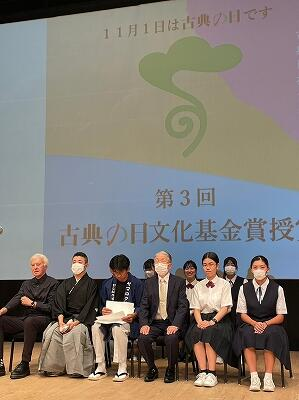
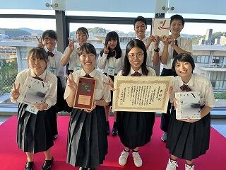
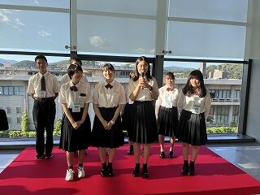

SAGANO BLOG
- >
- SAGANO BLOG
- >
- アカデミックラボ
2023年11月10日


京・平安文化論ラボです。
古典離れを課題とし、その課題解決のための探究活動をしています。
その取組やスタンプラリーの様子を、ＮＨＫ京都様に取り上げていただきました。
当日は、生放送での出演となり、とても緊張しましたが、良い経験となりました。
今後は京洋菓子司ジュヴァンセル様とのコラボ企画により、生徒一人につき登場人物一人をデザインした洋菓子の販売を予定しています。
〔ＮＨＫプラスでは、１週間は見逃した番組を見ることができます。（登録必要）〕
商品のご紹介 ※「」は商品名です
１チョコレートの詰め合わせ･･････「萩の上露」～光源氏・紫の上・桐壺更衣～
２チョコレートの詰め合わせ･･････「恋路」～玉鬘・六条御息所・夕顔～
３チョコレートの詰め合わせ･･････「淡月」～光源氏・明石の君・朧月夜～
４チョコレートの詰め合わせ･･････「絶えぬ思ひ」～光源氏・女三宮・柏木～
５チョコレートの詰め合わせ･･････「すゑつむ花」～内面と外面～
６タルト････････････････････････「光源氏」
７クッキー･･････････････････････「薫る大将」
８パウンドケーキ････････････････「花散里」
９ケーキ････････････････････････「藤壺」
１０ケーキ･･････････････････････「葵の上」
以上、１０種類です。
なお、一般販売は、２月から、京洋菓子司ジュヴァンセル様の御池店とオンラインショップで販売されます。
（御池店 京都市中京区御池通高倉西入高宮町216 TEL 075-231-7571）
２月からということで、少し先ですが、どうぞお楽しみに！
2023年11月10日

京・平安文化論ラボです。
「ちゅう源氏と巡る 源氏物語 京都スタンプラリー」にご参加いただきまして、ありがとうございました。
１０月２８日（土）、２９日（日）、１１月３日（金祝）、４日（土）、５日（日）の５日間、天気に恵まれ、快晴でした。
２８０００枚の台紙を用意しましたが、その多くを手に取っていただくことができ、約２０００人の方が、景品交換していただきました。
その中で、生徒は参加者の方と交流することができました。
「『源氏物語』に関係する寺院のことが良くわかって楽しめました。」
「来年の大河ドラマの下調べとして、ためになった。」
「これのおかげで、知らなかった神社やお寺に行くことができました。」
「外国のお客さまにもすぐに対応しているのがすごいです。」
など、多くの温かい言葉や励ましをいただき、喜んでいます。
秋の京都をお楽しみいただき、古典の世界を身近に感じていただけたら幸いです。
2023年10月04日
アカデミックラボ「京・平安文化論」です。
「ちゅう源氏と巡る 源氏物語 京都スタンプラリー」を実施します！
この取組は、『源氏物語』の世界を、身近に感じていただくことを目的にしています。
京都には、『源氏物語』ゆかりの神社仏閣がたくさんあります。
スタンプラリーにご参加いただき、秋の京都をお楽しみください！
〈日程〉
１０月２８日（土）、２９日（日）
１１月３日（金祝）、４日（土）、５日（日）の５日間です。
〈場所〉
スタンプ設置場所は、京都市内の『源氏物語』ゆかりの神社仏閣１１ヵ所と特設会場です。
①下鴨神社 ②上賀茂神社 ③雲林院 ④仁和寺 ⑤清凉寺 ⑥野宮神社
⑦天龍寺 ⑧廬山寺 ⑨清水寺 ⑩渉成園 ⑪東寺
〔特設会場〕古典の日フォーラム２０２３（事前に応募登録された方のみ）
〈台紙の配布〉
・本校事務室
・京都市バス・京都バスの車内
・神社仏閣１１ヵ所（古典の日フォーラムを除きます）
〈景品〉
スタンプを３つ集めると、「ちゅう源氏」オリジナルコットンバックをプレゼントします！
最新情報は、Ｘ（旧twitter）やInstagramでお知らせします。
X ＠kyo_heian_labo
Instagram kyo_heian_labo です。
どうぞ、ご参加ください！お待ちしています！
2023年09月14日

9月13日に仁和寺で開催された建築学生ワークショップ2023大学生✕高校生交流会に本校の文化・デザインラボで建築をテーマに探究する2グループが参加しました。
この取組は、全国の建築やデザイン、芸術を学ぶ大学生・大学院生を対象に公募し多数の応募者から選出された学生たちが、地域滞在型のワークショップで作品を制作するもので、毎年全国の世界遺産や寺社仏閣で開催されています。
今年度は京都仁和寺で開催され、参加されている大学生の皆さんは9月17日の公開プレゼンテーションを目指し、作品を制作されていました。
真夏日が続く中、参加大学生が屋外で仲間と1つの作品を作り上げるためにお互いに意見を交わし合い、イキイキと活動する姿や、自分たちの作品を自信をもってプレゼンする様子を見させていただきました。
また、交流会ということで、高校生にも積極的な意見の発言を求められ、本校生徒も慣れないながらも感想や意見、質問をしていました。
建築やデザインについての考え方が広がり、自分たちの探究活動に良い刺激になった日となりました。
2023年09月14日

9月８日、２年生のアカデミックラボの時間に、文化・デザインラボで建築やデザインをテーマに探究する生徒を対象に、３Dプリンター講習会を実施しました。
今回、公教育の探究活動を支援するソーシャル企業として活動する、本校卒業生で一般社団法人e-donuts代表理事の方にコーディネートしていただき、株式会社Monozukuri Venturesから講師の方をお招きし、デザインについてや、プロダクトや建築といった立体構造の捉え方（プロダクトデザインスケッチ）、CADソフトウェアの使い方をレクチャーしていただきました。
生徒達は慣れないソフトの使用に最初こそ苦戦していましたが、20分ほどするとすぐに使いこなし、与えられた課題をアレンジして制作するなど夢中で取り組んでいました。
完成したデータは、本校が所有する３Dプリンターで実際に出力してみました。
この講習会で「なんとなく難しそう」と感じていた３Dプリンターが自分たちでも使用できるということを知り、今後デザインしたものを試作するにあたり３Dプリンターで試作を重ねることができる選択肢が広がったように思います。
2023年09月07日

アカデミックラボ「京・平安文化論」ラボです。
「京・平安文化論」ラボでは、『源氏物語』などの平安文学の研究はもとより、古典離れを課題として探究活動を行っています。
この取組が認められ、第３回「古典の日文化基金未来賞」をいただくことになりました。
この賞は、古典の研究・普及・啓発に取り組む個人や団体に授けられます。
令和５年９月３日京都コンサートホールで行われた授賞式に行ってきました。
名誉総裁の彬子女王殿下をはじめ、都倉俊一文化庁長官、京都府知事、京都市長など、多くの来賓の方々がいらっしゃる盛大な授賞式でした。他の受賞者の皆さんも、古典に真剣に向き合って、伝統や文化を守っていこうとする素晴らしい取組をされていました。

ラボ生の声を紹介します。
Q１ 今の気持ちを教えてください。
たいへん光栄なことと感じています。私たち「京・平安文化論」ラボは、毎年、嵯峨野高校の２年生の１６名が探究活動を行っています。先輩からのバトンを引き継ぎ、毎年アップグレードさせてきた様々な企画をこのような形で評価していただき、とても嬉しく思います。
１４の企業様、市内の11ヶ所の神社やお寺、京都先端科学大学教授の山本淳子先生、イラストレーターのながたみどり先生、そして、古典の日推進委員会の皆様のご支援がなければ、今日を迎えることはできなかったと思っております。私たちの「挑戦したい」という気持ちを支えてくださることに、感謝申し上げます。
Q２ 苦労したことはありますか？
まず苦労したのは、お寺や神社に協力を依頼することから始まった６年前の先輩方だと思います。また、コロナ禍による活動の制限もありました。しかし、英語版のサイトを完成させることができました。英語版のサイトを作る際には、日本固有の概念を英語で伝えるのが難しいと感じました。
Q３ 今後の目標は？
嵯峨野高校の中だけではなく、より多くの皆様に古典に親しんでいただけるような取組を目指していきたいと思っています。今年は、洋菓子のジュヴァンセル様にお願いして、ケーキや焼き菓子、チョコレートで、『源氏物語』の登場人物を表現します。ジュヴァンセル様の店頭でも購入していただけます。販売時期が決まりましたらお知らせいたします。今回、賞をいただいたことによって、より多くの方に私たちの活動を知っていただき、そのことが、古典に興味を持っていただけるきっかけになればと思っています。京都の魅力や、平安文化の魅力を広めていけるよう、今後も頑張っていきます。この度は、本当にありがとうございました。
 
2023年07月10日
7月7日(金)２・３年生アカデミックラボ交流会が実施されました。２年生が自分たちの探究テーマや探究活動における悩みについて３年生に相談し、先輩たちは自身の経験をふりかえりながら、苦労した点や教訓などを後輩たちに伝えました。
先輩が昨年度取り組んだ探究テーマを引き継いだグループもあり、この機会に多くの質問を投げかけながら、具体的な探究活動のイメージをひろげることができました。
先日、探究成果発表会（SSGF）を終えたばかりの3年生から実感のこもった話を聞き、2年生は今後待ち受ける試練にプレッシャーを感じるとともに、自分たちの活動へのモチベーションを高めている様子でした。
2023年06月27日

「京・平安文化論」ラボでは、文学研究はもとより、若者の古典離れを課題とし、それをくいとめるためにはどうすればよいかを探究しています。その活動の一環として企画・運営したのが、『源氏物語』ゆかりの地を訪ね歩く「ちゅう源氏と巡る 源氏物語 京都スタンプラリー」です。参加者の方に、下鴨神社や上賀茂神社、野宮神社や東寺など京都市内全１２ヶ所の寺社を巡っていただきます。また、『源氏物語』の登場人物をイメージした和菓子を私たちがデザインし、地元企業様にご協力いただいて販売するなど、古典に親しみ、その魅力を伝える様々な取組をしています。
『源氏物語』を読み進めていく中で私たちが感じたこと。それは、平安時代の人々と現代の人々は似ているということです。貴族の恋愛が物語の軸にありながら、登場人物が抱く苦悩や喜びの感情は、令和を生きる私たちにも通じるものがあります。この魅力を、今後も若い世代へ発信し続けていきたいと思います。
私たちの企画の中でも「ちゅう源氏と巡る 源氏物語 京都スタンプラリー」は、毎年多くの方々にご参加いただいています。今年度も１０月２８日（土）、２９日（日）、１１月３日（金・祝）４日（土）５日（日）に実施する予定です。英語版のホームページもあります。地元京都の方をはじめ、海外からのお客さまにも楽しんでいただけるように準備しています。皆様にご参加いただくことを、「京・平安文化論」ラボ一同、心よりお待ちしております！
2023年06月23日
6月23日(金)に実際のソーシャルビジネスの事例を学ぶため、町屋をリノベーションしたプライベートサウナを見学するフィールドワークを実施しました。
案内していただいた講師は、公益社団法人日本青年会議所に所属されている、株式会社山下組専務取締役の山下翔太朗さまです。本業である工務店の経営資源を活かして、このプライベートサウナの設計・施工に取り組まれ、経営を取り仕切っておられます。

最寄りの北野白梅町駅からの道中にある町屋の中には、空き家となって放置されているために老朽化し、景観や近隣の安全の面で問題のあるものも多いことに気づかされます。訪れたプライベートサウナは、道中の空き家と比べても、さらに危険な状態で放置されていた町屋を改装したものであり、町屋の意匠を活かして外観が美しく整えられているため、地域の景観にも溶け込んでいます。建物の中では、昨今のサウナブームの需要に応える経営者のこだわりの詰まったプライベートサウナが営まれ、落ち着いて寛げる空間が広がっています。
山下さまは、本業や趣味を生かし、お客様のニーズの高まりに応えたビジネスを営まれています。その事業は町屋の保全・発展に貢献し、風呂おけなどの備品の職人の宣伝にもなり、近隣住民にも歓迎されています。これぞ、ソーシャルビジネスです。
今回フィールドワークに参加した生徒たちは、自分たちがビジネスプランを考えていく上で、商売の原点ともいえる「三方よし」の大切さに気付かされるとともに、自分の考えたビジネスを経営していく面白さにも目覚めました。めざすべき理想のビジネスのあり方として参考にしながら、高校生らしい夢と希望に満ちたビジネスプランを考え出すべく、探究を進めていきます。
2023年06月13日
6月9日(金)２・３年生合同行事である表題の課題研究発表会（SSGF）が開催されました。３年生にとっては、嵯峨野高校でこれまで取り組んできた探究活動の集大成となるイベントです。校内21会場で、３年生全員が課題研究の成果を口頭発表し、２年生全員が聴講・質疑応答に参加しました。

今年は、普通科・京都こすもす科共修コース・専修コースそれぞれの生徒が、コースの枠組みを超えて自由に好きな発表を聴講できる形になり、活発な質疑応答が見られました。

アメリカのJunipero Serra High Schoolから参加した2名の生徒も本校生徒と同じように課題研究発表を行いました。例年通り、英語による発表の会場では京都の大学院などで学ぶ海外からの留学生などがティーチングアシスタントとして参加し、質疑応答を通じて探究活動を深めることができました。他校からも視察があり、本校の取組を知っていただく良い機会となりました。

2023年05月27日
５月21日（日），スーパーサイエンスラボ［校有林調査ラボ］と，アカデミックラボ［数学活用ラボ］に所属する３年生８名が，千葉県で開催された日本地球惑星科学連合2023大会にて学会発表を行いました。
発表タイトルは次の４件です。
・嵯峨野高校校有林土壌の岩石風化層（Ⅽ層相当）の陶土利用
・嵯峨野高校校有林の健康診断 ～林分材積、胸高形数、相対幹距比～
・フラクタル図形の日除けへの利用に向けた特性評価
・フラクタル日除けの放射環境への影響の定量的評価


これまでに経験のない大きな舞台でも堂々と，また丁寧に説明する姿が見られました。
説明を重ねる度に質疑応答が上手くなっていく様子に頼もしくも感じました。
研究を伝える難しさを感じたり，さらなる研究課題に気づくこともできたようです。
この経験が，生徒の今後にとって意味のある時間となることを願っています。
全国の高等学校からの研究発表，大学や企業の展示も多数あり，高校生に向けて科学する面白さを伝える雰囲気に溢れていました。
前日には，国立科学博物館に出向き，科学の歴史を身体で体感しました。
2023年05月27日
全国の高等学校からの研究発表，大学や企業の展示も多数あり，高校生に向けて科学する面白さを伝える雰囲気に溢れていました。
前日には，国立科学博物館に出向き，科学の歴史を身体で体感しました。


2023年05月15日
アカデミックラボの文化・デザインラボでは、嵯峨美術大学の日本画コースの仲先生をお招きし、「文化財の保存を考える」をテーマに特別講義をしていただきました。
私たちが住む京都には数多くの寺社仏閣や文化財があります。仲先生は建造物彩色絵画修復のご専門で、これまで二条城の障屏画の模写保存や京都各地にある寺社の建造物の彩色修復を行ってこられました。
文化財修復と言っても、ただきれいにすることが求められているわけではなく、歴史的価値や行政、国、所有者、修復を行う技術者の様々な意向やモラルが大きく関係し、その文化財に最適な修復の方法をとっていることを具体的な事例をもってお話しされました。さらに、これからの時代を生きる生徒たちに、「誰のために何のために文化財を保存修復するのかを考え続けていかなければならない」と、メッセージを話され、これまで漠然と文化財を見てきた私たちにとっては新たな視点で考えるきっかけになりました。
2023年05月08日
4月28日（金）のアカデミックラボの時間に、文化・デザインラボでは、河井寛次郎記念館にフィールドワークに行きました。
河井寬次郎記念館は、大正・昭和に活動した陶工・河井寬次郎の住居・仕事場をそのまま記念館にした施設です。生徒達に「暮らすことと工芸の繋がり」を肌で感じ考えてほしいと思い、このフィールドワークを計画しました。
建物の設計、館内の家具や調度品は河井寛次郎がデザイン・制作しており、室内の隅々まで河井寛次郎の美意識を感じることができます。
現代と大正・昭和の住居や暮らし方の違いを確認しつつ、どこか懐かしく、居心地の良い空間に生徒たちははじめは物珍しそうにウロウロと館内を鑑賞していましたが、時間が経つにつれ椅子に座ってじっくりと窓の外の風景を見たり、展示されているオブジェに関心を持って思いを馳せてみたりと思い思いに時間を過ごし、閉館時間までたっぷりと鑑賞しました。
これからこの体験がどのように生徒たちの探究活動に活かされるか楽しみです。
2023年03月25日
2023年3月23日
アカデミックラボ 数学活用ラボ所属の２年生５名が、第一薬科大学・日本薬科大学・横浜薬科大学主催「高校生サイエンス研究発表会2023」（全国から243件の研究発表）にて、研究発表を行いました。

{kind=link}
{kind=link}
{kind=link}
{kind=link}
{kind=link}
{kind=link}
{kind=link}
{kind=link}
{kind=link}
{kind=link}
{kind=link}
{kind=link}
{kind=link}
{kind=link}
{kind=link}
{kind=link}
{kind=link}
{kind=link}
{kind=link}
{kind=link}
{kind=link}
{kind=link}
{kind=link}
{kind=link}
{kind=link}
{kind=link}
{kind=link}
{kind=link}
{kind=link}
{kind=link}
{kind=link}
{kind=link}
{kind=link}
{kind=link}
{kind=link}
{kind=link}
{kind=link}
研究発表１ 最後の一粒をすくえ！
「炒飯のご飯粒など最後に残った一粒をどうしたら簡単にすくえるのか」という身近な疑問をきっかけに、スプーンの厚さや平皿とスプーンのなす角（入射角）が物体のすくいやすさにどのような影響を与えるのかについて、力学的視点から力のモーメントのつり合いに着目した研究
研究発表２ 癒し空間をつくるフラクタル図形の日除けへの利用
「木漏れ日が心地いいと感じるのはなぜか」，「"日を適度に遮り，適度に風が抜ける"この"適度"とは具体的にどの程度なのか？」という問いのもとで、実測予定日に合わせた遮光角をもつシェルピンスキーの四面体で日除けを自作（3Dプリンター）し，日除けの放射環境への影響を捉える研究


今回、この２チームは学校外の研究発表会に初めて参加しました。
研究を伝える難しさや、テーマのおもしろさを伝えるための工夫の余地など、今後に向けた課題も見つかったようです。研究発表会への参加経験は、多くの気づきと学びを与えてくれます。
この経験を自信につなげて、今後さらに研究の奥深さと楽しさを感じてほしいと願っています。
2023年3月25日
2023年02月01日
2月1日(水)午後に、２年生のアカデミックラボ課題研究発表会を実施しました。
２年生が１年間かけて、アカデミックラボで取り組んだ探究活動の成果をポスターセッションの形式で発表しました。聴衆として１年生の生徒や探究活動でお世話になった方々を校外からお招きし、活発な質疑応答で盛り上がる発表会となりました。
２年生にとっては１年間の集大成であるとともに、次年度の６月に予定されている英語でのスライドプレゼンテーションに向けてさらなる改善点が見つかるきっかけとなりました。１年生にとっては、次年度のアカデミックラボの活動で目指し超えるべき目標と向き合う時間となりました。嵯峨野高校の探究活動がさらに深まっていくことが楽しみです。
{kind=link}
{kind=link}
{kind=link}
{kind=link}
2022年12月19日
課題探究学習アカデミックラボの【数学活用ラボ】に所属する2年生3名の生徒は、スプーンのすくいやすさに着目した探究活動を行っています。
探究テーマ設定の理由は、炒飯を食べるときなど、レンゲやスプーンで最後の一口がうまくすくうことができないもどかしさからでした。数学活用ラボではこうした身の回りの疑問や課題に対して、数学を活用して解決することを目指しています。
11月に京都工芸繊維大学で行われた「みやびサイエンスガーデン」では、京都府内の他の高校生や全国から参加されている教員、大学教授などの方々に向けて、中間成果を発表しました。研究内容に関心をもった多くの方々から課題解決につながるアドバイスや意見をいただき、最終発表に向けてさらなる探究活動が始まっています。
令和４年も終わりが近づき、探究活動に取り組むことができる時間も残りわずかになってきましたが、どういった成果が得られるのか楽しみです。
{kind=link}
{kind=link}
2022年12月14日
源氏物語の世界を体験
～干菓子の詰め合わせ～
嵯峨野高校生が源氏物語の登場人物を干菓子で表現しました。鍵善良房とのコラボ商品として販売します。
嵯峨野高校の生徒が授業「京・平安文化論ラボ」で『源氏物語』を研究するなかで、味覚と視覚から源氏物語に親しんでいただきたい、という思いから源氏物語に登場する人物をモチーフに干菓子をデザインしました。ラボ生達は嵯峨野、個性豊かな17名の登場人物を表現しています。そのデザインを基にした干菓子17種の詰め合わせを鍵善良房に作っていただきました。
１月中旬に嵯峨野高校生限定で販売をしますが、店頭や通販でも販売されることとなりました。多くの皆様に和菓子を通じて古典の世界に親しんでいただけると思います。付録として、登場人物の説明をお付けします。源氏物語の世界を、どうぞお楽しみください。
■ 概 要
○ 日 時 令和５年１月17日（火）から 期間限定で販売の予定
○ 販売場所 鍵善良房 京都市東山区祇園町北側264番地
○『源氏物語』に登場する人物をイメージした干菓子（17種）
{kind=link}
{kind=link}
{kind=link}
2022年09月30日
9月30日(金)に、ソーシャルビジネスラボで行った取り組みを紹介します。
この日は、つい最近開発されたばかりのボードゲームをプレイすることで、日本を代表する経営者である「松下幸之助」の経営哲学を体感し、自らの成長や人とのつながりを通して、チームで目標を達成する難しさと尊さを味わうワークショップを実施しました。
最大プレイ人数は６人です。21人の生徒が参加できるように、ボードゲームのファシリテーションをしていただける協力者の方々に依頼し、快くお引き受けいただいたおかげで実現した企画です。結果的に、普段の学校生活では関わるチャンスが少ないビジネスパーソンの方々と交流できる貴重な機会となりました。
企業で働くことの大まかなイメージ、ビジネスの場におけるコミュニケーションの重要性と難しさ、チームの中での効果的な役割分担のしかた、そして何よりも社会に貢献するという大きな目標を見失わずに全体を見渡しながら仕事をすることの大切さなどに気づくことができました。
{kind=link}
{kind=link}
{kind=link}
{kind=link}
{kind=link}
{kind=link}
2022年09月30日
本日のラボでは、はじめに理数探究プロジェクトリーダーの谷口先生から、数学ラボからぜひ学会をはじめとする発表の場に積極的に出てみては、とのお話がありました。数学ラボの活動内容について励ましの言葉もあり、生徒達の表情も前向きだったように見えました。
{kind=link}
その後は各班に分かれて前回からの続きです。先週は祝日だったため２週間ぶりの活動ですが、前回に各自が調べておく内容をまとめておき、調査結果を持ち寄ることで、スムーズに始められていました。
{kind=link}
「安全性」に関する活動を行っていく中で、通学路周辺のマップを皆で調べています。さて、数学ラボとしてどういう方向性にもっていくのでしょうか。
{kind=link}
後半では黒板の周りに集まって板書をしながら活発にやり取りしていました。何やら変数を設定して２つの不等式について論じているようです。これまでに授業の中で学習した内容がかなり色濃く反映していたようでした。
グループ内で、ああでもない、こうでもないと論じていく中で数学を活用しながら探究を深めていく面白さが増幅されていくのかもしれません。
{kind=link}
次週は定期テストのためラボ活動はお休みです。この計算の続きは４人にとっては再来週の「お楽しみ」となりました。
〒616-8226
京都市右京区常盤段ノ上町15番地
TEL 075-871-0723 FAX 075-871-0724
E-mail [email protected]
Copyright (C) 京都府立嵯峨野高等学校 All Rights Reserved.